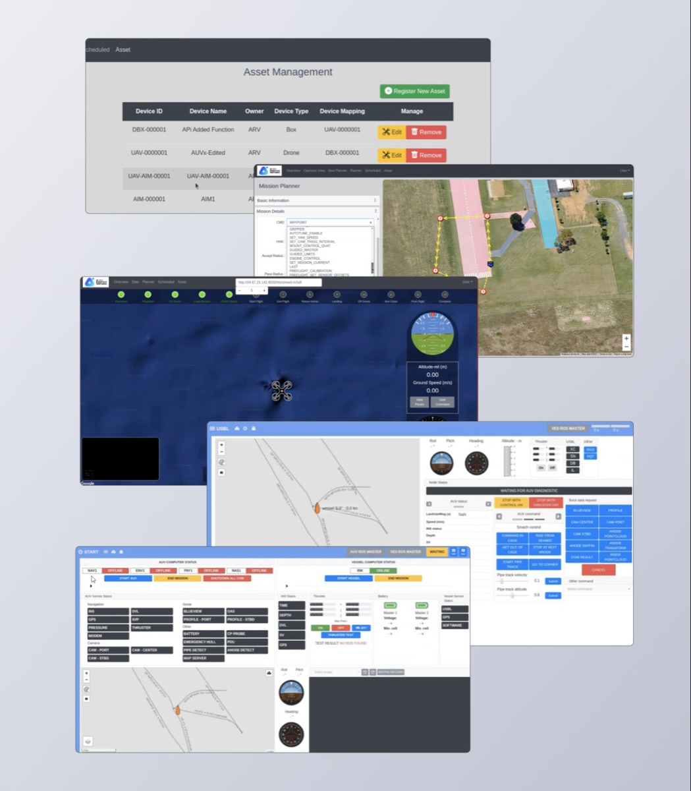
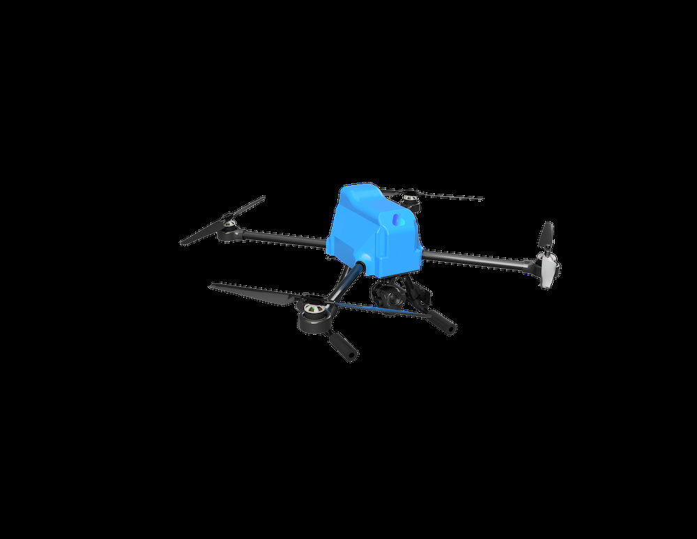
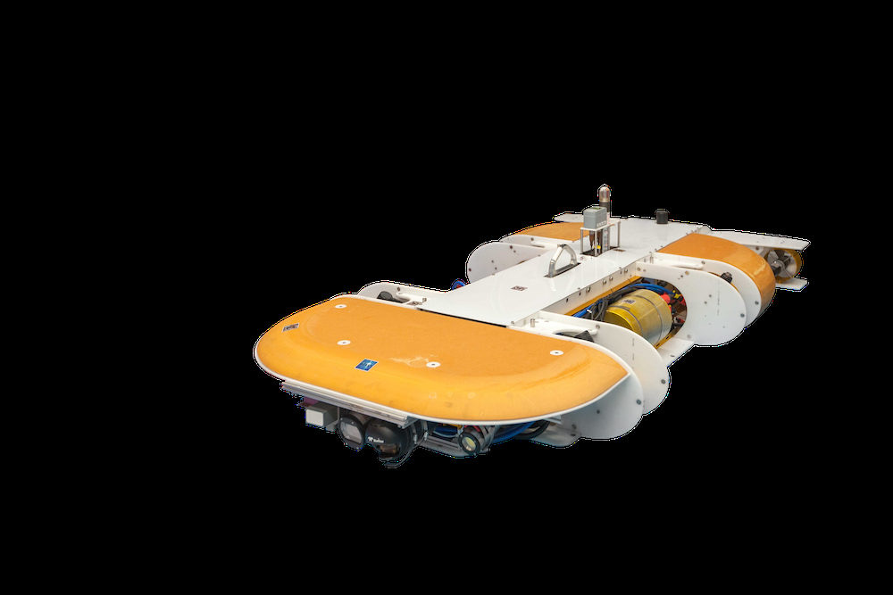
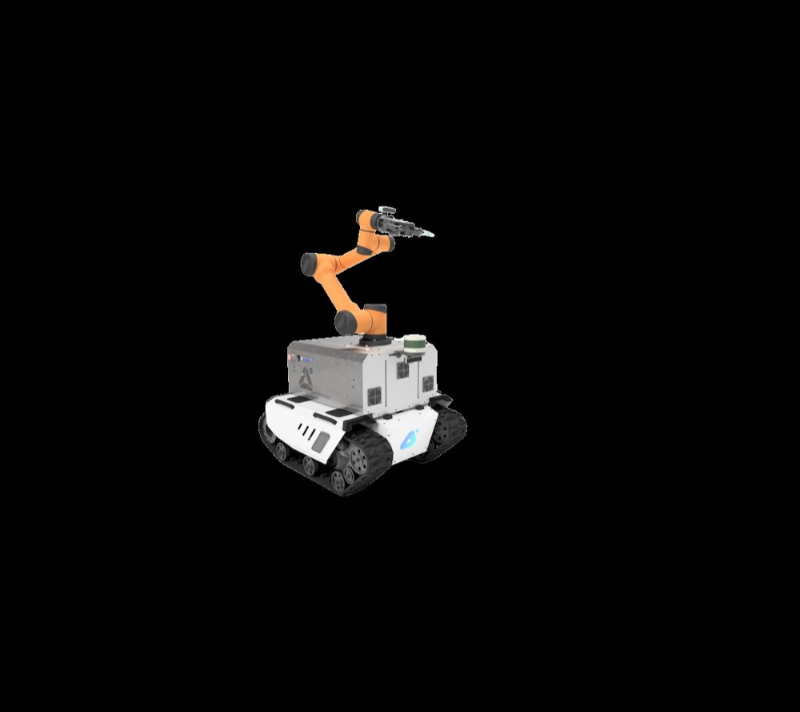
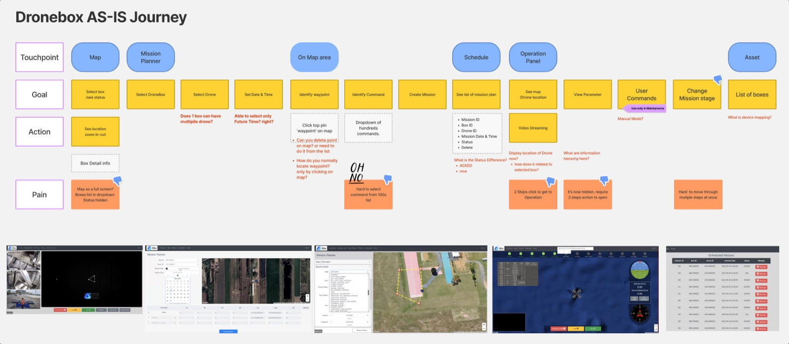
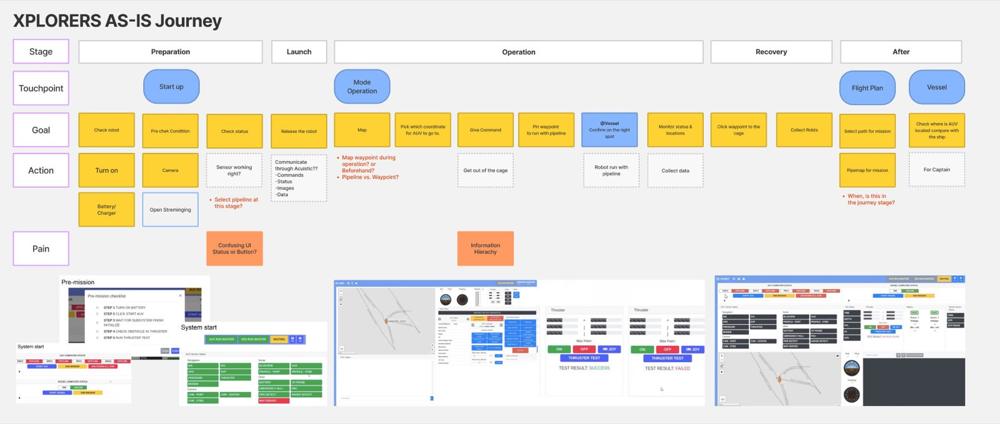
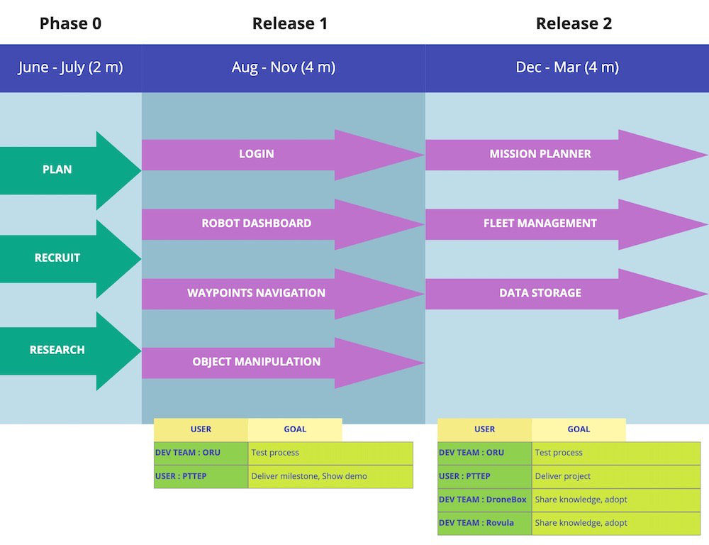
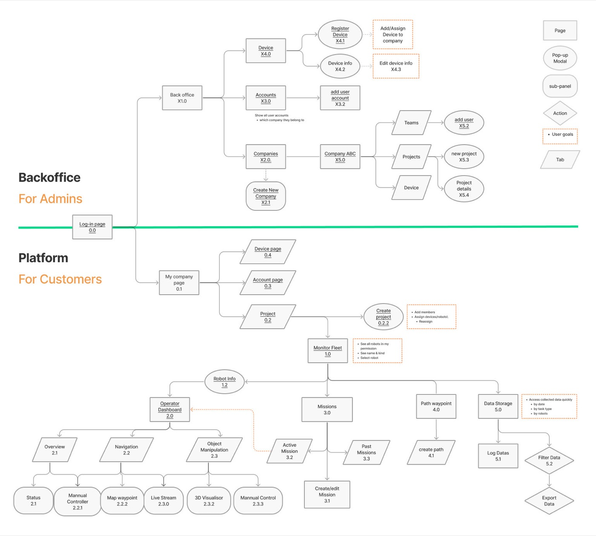
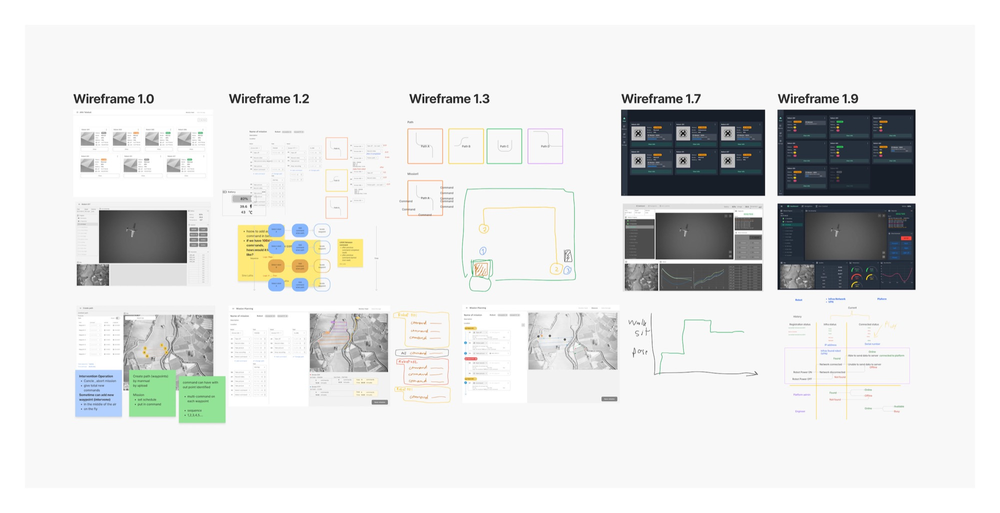
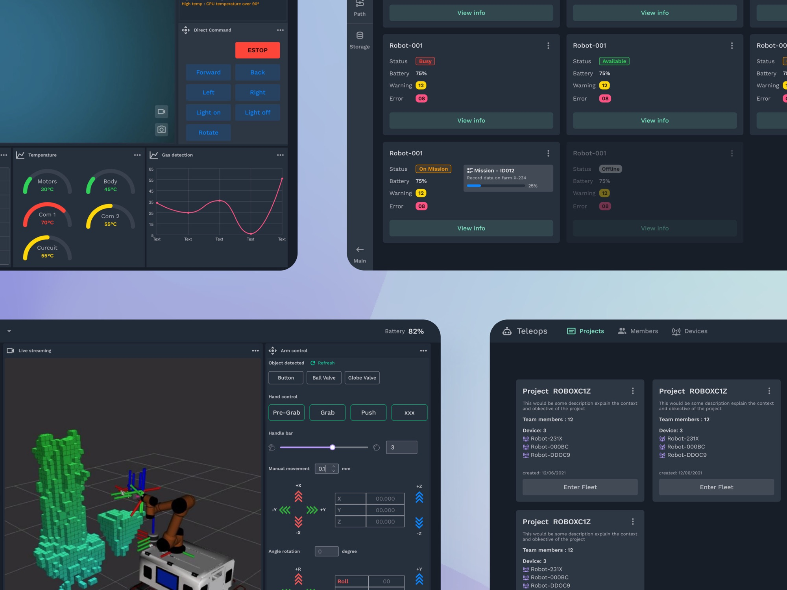

One platform to drive every robot
Researching and designing a shared teleoperation platform for drones, boats and robot arms at AI & Robotics Ventures.

The problem
Every robot team was building its own operating software — solving the same problems three times.
What I did
Interviewed engineers, mapped how each robot is operated today, found the shared patterns and designed one platform around them.
Outcome
Three teams aligned on one feature roadmap, one information architecture and one set of UI components.
Context
The company was growing a family of robots, and each one came with its own control software.
A drone docking station, an underwater explorer and a robotic arm were each developed by a separate team. Each team needed a way to see, steer and monitor its robot remotely.
Teams were all trying to solve overlapping problems: live video, maps, telemetry, mission planning. Building it once, together, would be faster and give operators one consistent tool.




How I approached it
Learn the robots
Interviewed engineers from each team and mapped the as-is journey of operating each robot to find gaps.
Find the overlap
Grouped requirements into shared patterns and prioritized what the platform had to do for all teams.
Build it with engineers
Weekly sessions with engineers to refine wireframes, then turned them into UI components and screens.
Research: same goals, different robots
I had no robotics background, so I started by learning how engineers actually operate their robots.
I mapped the as-is journeys for the existing tools, like Dronebox and Explorer, step by step.
Laid side by side, the journeys showed that most steps shared the same goal, even when the robots were completely different: connect, check status, plan a mission, watch the feed, react to alerts.
That overlap became the backbone of the platform.


Strategy: a roadmap everyone agreed on
Each team wanted something different from the platform. I needed one plan that worked for all of them.
- Listed every team's requirements and goals in one place.
- Clustered them into shared capabilities: login, robot dashboard, waypoint navigation, mission planner, fleet management, data storage.
- Sequenced them with the team by technical dependency and team capacity into Phase 0, Release 1 and Release 2.


It gave us the ability to clarify and discuss based on concrete materials, and to see how each component relates in the bigger picture.— Product Manager
Design: wireframes as a shared language
Wireframes did more than describe screens. They became how engineers talked about constraints with each other.
Every week I met with engineers to turn technical requirements into interfaces they could react to. A wireframe made questions concrete: what does an operator need to see when the connection drops?
Once flows were stable, I turned them into a dark, high-contrast UI built for long monitoring sessions, with live video front and center and telemetry around it.

These wireframes truly helped us discuss high-level technical requirements and constraints with each other in the team.— Robotics Engineer

Outcome & learnings
Outcome
- Three robot teams aligned on one shared roadmap instead of three separate tools.
- Documentation and visuals became the reference for sprint planning with engineers and the PM.
- The product kept evolving in sprints. I designed the system to leave room for requirements that weren't settled yet.
What I learned
- Clarity is a design deliverable. Agreeing on terms and ideas with engineers mattered as much as the screens.
- Think wider than a screen: the context of a flow, a feature and the operator's situation.
- You don't need a technical background to design for a technical product, but you do need to do the homework.